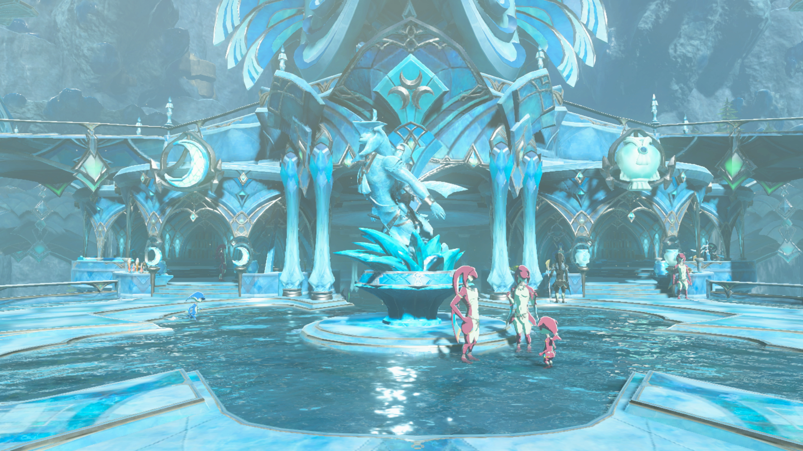
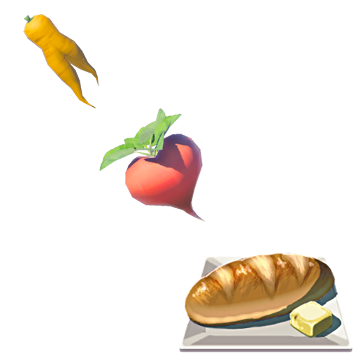
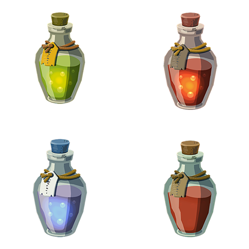

You can't go on a quest, without a delishious feast traveler!
Traveler's Inn

The world can be a big and dangerious place. So be sure to stop by our local residental inns and help yourself into our fine dining feasts. We have a vieritey of hyileen dishes and elixiers that our out of this world delish!
Zora's Domian
While your on your way to finding a Divine Beast, Be sure to swing on by Zora's Domian. The locals are very friendy and their seafood dishes are a meal to die for!
Goron City
Looking for somthing extreamly hot? Check out the the hottest dining spots in Goron City! Try their signature "Fire-Roasted Rock Steak" but eat with caution.
STARTERSS - The Traveler’s Beginning
 Hylian Wild Mushroom Skewer
Hylian Wild Mushroom Skewer
- A medley of roasted forest mushrooms glazed with herb-infused butter and served on a charred wooden skewer. Inspired by the first meal every adventurer cooks.
MAINS - The Champion’s Feast
 Seared Prime Meat & Seafood Fry
Seared Prime Meat & Seafood Fry
- Tender steak medallions paired with pan-seared prawns, served with roasted root vegetables and a honey glaze. A hearty meal fit for a hero on the road.
- Smoky, char-grilled ribeye marinated with volcanic salts from Death Mountain. Served sizzling hot - handle with care!
- Succulent roasted bird seasoned with mountain herbs and served with wild berry reduction. A soaring dish from the skies of Hebra.
 Zora’s Domain Salmon Meunière
Zora’s Domain Salmon Meunière
- Pan-seared salmon with lemon butter caper sauce and seaweed crisps. As elegant as the waters of the Lanayru region.
SIDES - Forest & Field
 Steamed Swift Carrots- For extra speed and agility.
- Creamy mashed radish with roasted garlic and spring onions.
- Warm baked loaf of bread with local grains and served with honey butter.
DESSERTS - Sweet Rewards
 Monster Cake
Monster Cake
- A cake made with with a verity of cake ingritiets. Including Monster Extract, the amount of Hearts they heal to Link's Life Gauge will be random when they are made.
- Refreshing desert fruit sorbet inspired by Gerudo Town’s most famous (and exclusive) drink.
- A delicate lavender-infused cheesecake with a white chocolate glaze. Rare, beautiful, and unforgettable (However, Apples are unable to be used in this recipe, as the resulting dish will be Apple Pie. Regular Fruit Pie can be made by using either Palm Fruits or Wildberries).
DRINKS - Potions & Elixirs
 Energizing Elixir- Citrus and mint mocktail with sparkling water and a dash of stamina syrup.
- Warm cinnamon-pepper blend to keep the cold at bay.
- Freezy crystal flakes to keep you cool during hot tempatures
- A healing potion extracted from the fairies of hyrule